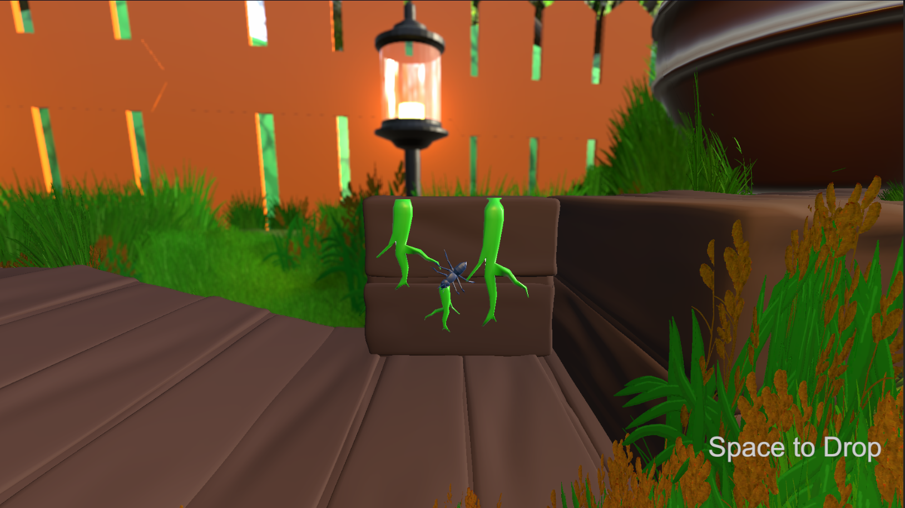
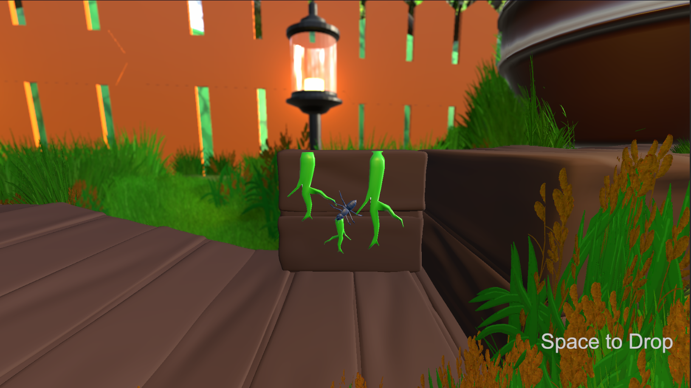

Check out our itch page!
Ant Game, as you may have already guess, is a game about ants! You play as the lost Anthony, separated from his colony after the ant farm collapsed. Now you have to journey through the treacherous lands of... the garden... to be reunited with your family. Who know what obstacles you will face?
For this project, I have contributed several simple mechanics, such as the basic movement, projectile throwing, interaction and dialogue loading. Some more complex scripts were also written, for example, prediction of physics when throwing and climbing mechanics.
We used ink unity integration by inkle for the dialogue implementation.
Each character is considered an interactable object, along with grabbable items. As the player interact with them, the game checks the type of object the player interacted with, in this case a character, and loads the dialogue.

Each character has a set of dialogue scripts and cameras to zoom in on. Once interacted the perspective shifts to the camera and the textbox appears.
While in dialogue, the player will click to progress. talking determines if the dialogue is still being printed out, so when set to false, the player will not be able to skip the line, however for the player's convenience, the speed of the dialogue printing will increase when clicked. After the message finished printing, the next line can be loaded.
The camera can also be changed during the dialogue, using Cinemachine functionalities, we can set priorities of the cameras so that the camera we desired could be targeted and used.

Below is a sample script demostrate dialogue loading and camera switching. For the first line the game will turn to camera 2 of the character, then the next line will turn to camera 0.

When the player approaches a wall, they may have the ability to climb on them. Issues have risen while implementing this unique mechanic involving rotation of the player, but we have found solutions to make this mechanic simple to understand and fully functional.
As the player decides to climb onto the wall, the game snaps the player onto the wall, to ensure that the player does not fall out of the wall due to collisions being separated. Some walls are also situated at an awkward angle, so for the player's experience, we've made it so that cameras can be attached to make the character and directions easier to pin point.
Below is a comparison of camera angles on the ground and on the wall:
We've also had to make sure that the player is oriented correctly to the wall. This was simply done by finding the wall's orientation and apply it to everything else, whether that be the movement controls, or the player's looking direction. We had to make sure, with the change in axis of control, that the player controls corresponds to what they see on screen.
 

Another major gameplay mechanic is throwing projectiles. In a physics-based mechanic like such, it is important to give good indication of what's going to happen, in this case, where your projectile would land.
To visualize the trajectory of the projectile, the game has to first setup a physics scene, allowing physics to be simulated before it occurs in the game. Any obstacles in the scene, basically all colliders, should be copied over to this new scenes.
This systems will need to take into account any physical properties, including object mass and throwing force. The main controlling script will pass in these details into the main prediction function.
With everything set up, the game can start predicting the projection. Copying the projectile to the physics scene allows the start of the simulation. After applying the force to the cloned projectile, the trajectory line can be drawn, following the exact path as predicted.